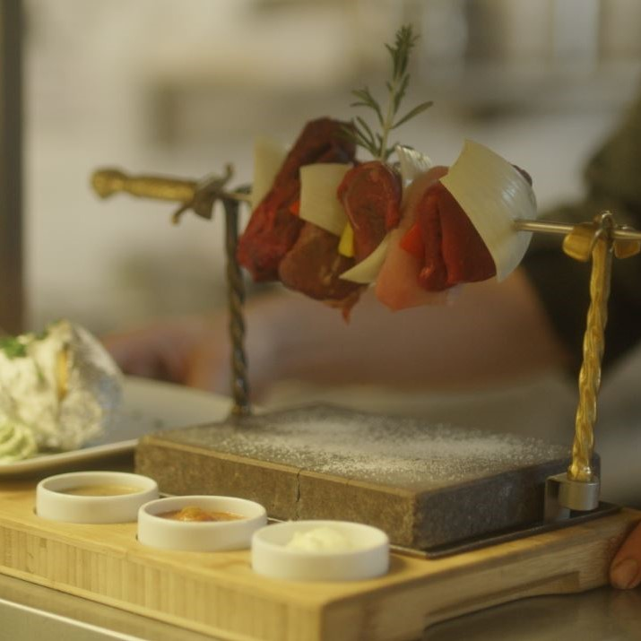
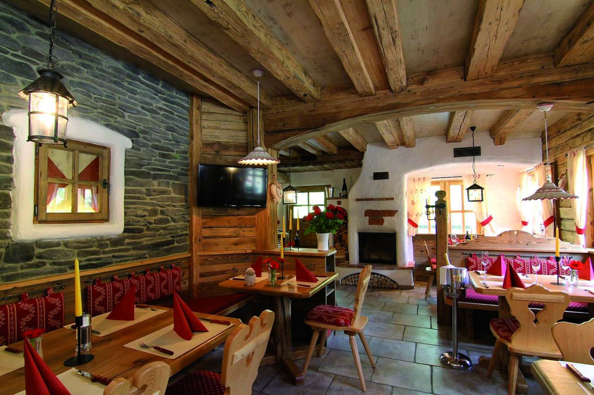
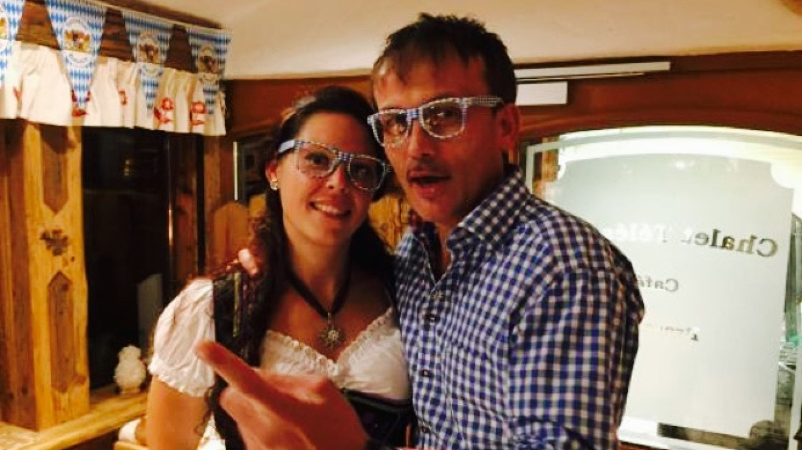

Un chalet tyrolien dans les Ardennes luxembourgeoises : pierre chaude saisie à table, fondues à partager et grillades, au coin du feu.
37, rue du Sanatorium · L-9425 Vianden

La pierre volcanique arrive brûlante à votre table. Vous saisissez vous-même vos viandes et légumes, à votre goût, à votre rythme — le repas devient un moment.
Posez viandes et légumes sur la pierre à ≈300°C. Ça grésille aussitôt — l'odeur envahit la table.
Quelques secondes de chaque côté, selon votre cuisson préférée. Bleu, saignant, à point : vous décidez.
Un tour dans nos sauces maison, et on recommence. Le repas dure aussi longtemps que la soirée.
Une cuisine généreuse de chalet : les deux grands rituels à partager, puis grillades, poissons de rivière et douceurs tyroliennes.
Carte indicative transcrite des menus 2025/2026 · prix, plats et disponibilités à confirmer avec l'établissement.

Murs de pierre, poutres de bois brut, feu de cheminée et linge rouge à carreaux : le Hot Stone Chalet a l'âme d'un refuge alpin, planté au pied du télésiège de Vianden.
On y vient en famille, en couple ou entre amis pour le plaisir simple d'un repas qui se partage et se prépare ensemble.

Ici, la tradition tyrolienne ne s'arrête pas à l'assiette. Les hôtes vous reçoivent en tenue alpine, dans la bonne humeur d'une soirée de chalet.
Un accueil chaleureux et multilingue, à deux pas du château et du télésiège de Vianden.
Groupes et fondues sur réservation. Un simple appel suffit — nous confirmons votre table avec plaisir.